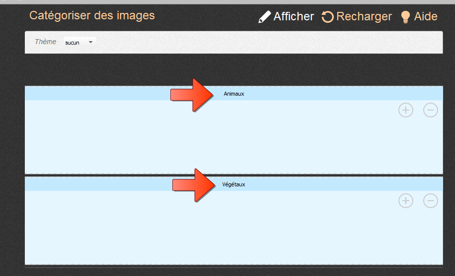
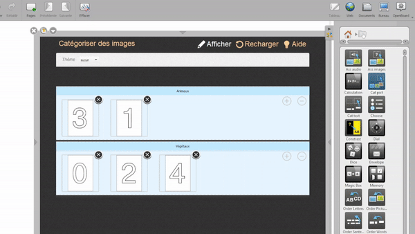

Esercizi interattivi, semplici da personalizzare
Per gli alunni piu giovani (e non solo), OpenBoard offre un insieme di interattivita personalizzabili: categorizzazione, calcolo mentale, memorizzazione, ecc.
Sono disponibili nella libreria: fai clic su .
Esempio: "Categorize Pictures"
Creiamo un esercizio con l'interattivita
Categorize pictures (categorizzare immagini):
 .
.
1) Posizionare l'interattivita e aprire l'editor
Trascina l'interattivita sulla lavagna, poi fai clic su Modifica.
2) Dare un nome alle categorie
Rinomina le categorie secondo le tue esigenze. Puoi anche aggiungere o eliminare categorie con le icone "+" e "-".

3) Aggiungere le immagini
Aggiungi le immagini corrispondenti a ogni categoria (trascinamento, selezione dalla libreria, ecc.).

4) Avviare e svolgere l'esercizio
Fai clic su Mostra per avviare l'attivita in modalita studente.